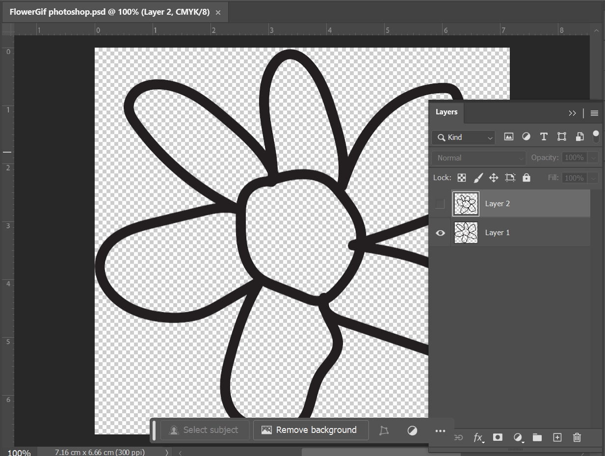

Today I made a GIF for the first time. It's something I expected to be much more complicated than it was... I feel like with Generative Art, moving images are much more suited to the expressive, dynamic nature of what I am learning. It is also a much more fun , engaging , indicative way of conveying information.
25/03 : Making a GIF!

I followed an Adobe Tutorial to make a simple animated GIF with two frames.
1. Make each layer on a psd a different picture, or frame of the animation.
2. Go window -> timeline
3. Select create frame animation from the dropdown menu, and choose make frames from layers from the flyout menu. (If you have used the Timeline before, it may populate with empty frames by default. If this happens, click on the first frame and hold the shift key while clicking on the last one. Choose Delete Frames from the flyout menu. Then you can choose Make Frames From Layers.)
4. Next, choose the loop length and frame interval.
5. Finally, export to GIF: file -> export save for web (legacy). Set gif as the export format ad forever as the looping option.
